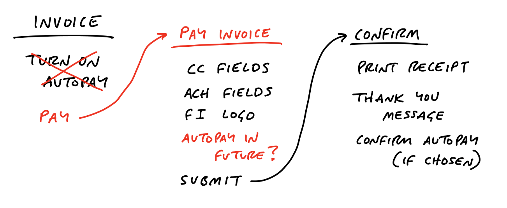
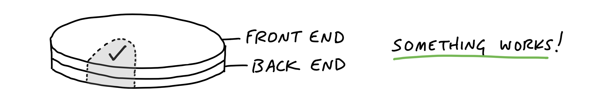
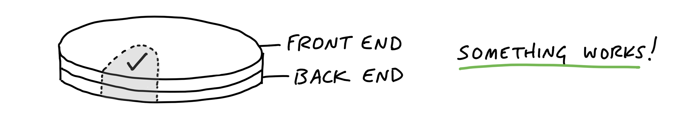

This book describes a method for structuring a software engineering department for building software products in six week cycles. The primary audience is the ‘designer’, or ‘shaper’ - basically the product owner / business analyst in our context. The bulk of content is in this first design phase, though it does have something to say about the actual development process in part 3, in particular the designers role as a manager/monitor during this phase.
The ideal team here is 1 designer, 2 developers. The designer is the product owner, and is also in a sense a ‘manager’ of the devs (though a very hands off one).
Basecamp, the firm behind the book, build user facing application, with a web-based front end and a back end. The implementation here is somewhat tied to that idea that there will be something that the user will be interacting with. For any project which doesn’t fit that mold, the design process will need to be modified.
The devs will be nearly entirely autonomous and self-managing during the build process. You need to have a lot of trust in the developers. For that reason this won’t work well with contracted resources. It will also (like every other methodology) work much better if the team is a fixed one, and you’re not setting up the team-of-three specifically for the project, and everyone is used to working with one another.
The process of development starts with the raw idea. The feature that is proposed or the problem the user is having. From there it goes through 3 stages:
Six weeks, because 2 week sprints are too short and come with too much admin overhead. Plus, in a 6 week window, you’re likely to be able to get something much more meaningful done, and done from start to end. But it still gives that focusing deadline to work on.
Between each cycle there’s a 2 week cool-down, with no scheduled work. Devs are free to work on what they want (that is work related). It’s also a time to work on bugfixes etc.
There are a couple of pre-requisites. First, the time-box is uninterrupted dev time, with the team working only on that. They don’t get pulled away to fix bugs or anything else. You need to get and maintain momentum. Worst case, you have to wait 6 weeks to deal with a bug and do it in cool-down.
If it’s a true everything’s-fucked crisis, then just break the whole cycle. But this should be very rare.
Second, if a team doesn’t ship after 6 weeks, it doesn’t get extended. The project failed. You have to re-pitch. This is called the circuit breaker. The goal is that you have a fully clean slate with every cycle. Never carry over scraps.
You’re trying to end up with a design at a medium level of fidelity - more detailed than just words, but not wire frames. You’re trying to convey the boundaries around the thing, where you have intentionally set the boundaries so it can be built in a six-week time-box.
Then you distill that design into a pitch.
All of this happens in your own private sphere. You’re not sharing it with the devs until the end.
When the raw idea is proposed, the default response should be ‘interesting. Maybe some day’. That’s it. Too early to say yes or no.
Dig into it, figure out the underlying ‘whys’ of the request. Users tend to ask for the swiss army knife they know when the problem they are having requires one tool.
At this stage, you are defining the problem in words.
If it seems too big to be done in a 6 week time-box, chop bits off. Use the time-box constraint to focus on what is important.
If it seems too small for a full 6 weeks of work, change the time-box to 2 weeks.
When the problem is ‘narrow’, and you know what ‘done’ looks like, you can start shaping solutions.
Sit on your own or with someone you trust, who understands how the business works.
Create ‘breadboards’ - box-and-arrow diagrams with names of places the user will go, ways they will interact with the places, and connections (arrows) between the places

Create ‘fat marker sketches’ of the UI - visual elements which convey the idea of what is wanted, without any detail.
You’re trying to get the elements of the design - ‘the user will click a button to do xyz’. Or ‘the user will see a grid like calendar for the next 2 months’
Be ruthless about eliminating nice-to-haves, and if you see applications for a piece of functionality beyond the current use case, make it explicit that this is outside the boundary of the current piece of work. When you have eliminated nice-to-haves, never mention them to anyone. If they’re out of scope, they’re out of scope.
While your design will not include specific implementations (that’s the devs job), you as designer need to know for each part of your design that an implementation is plausible given the six week constraint.
In particular you want to avoid ‘tail risk’ for implementations - things you ask for in the design that can look simple to implement, but in reality can end up extending the shipping date by 2-3 times the 6 week window. Technical solutioning is a minefield of these things.
This comes down to experience, technical sense and design sense; knowing what is possible, knowing what sort of problem tends to lead to these rabbit holes.
Walk through the design again, looking out for holes, and making sure you at least have an idea of each piece could technically be implemented.
Where you don’t have a clue, you need to loop in technical experts. But be conscious, and emphasize to them that this is still private work, the clay isn’t yet dry. Use whiteboards, not PowerPoints. Be conspiratorial about it. Stick to what you already have, and ask their opinion on how this could be implemented in a 6 week period. Don’t ask them for design proposals on things you haven’t got a design for yet
The pitch is what is presented to the people who decide what will be worked on in the next cycle. Ahead of the meeting you need to prepare the pitch.
Define the problem first, usually with a single, specific user story that show why what you have now doesn’t work for you.
State the time-box you’ve set - whether you’re targeting a 2 or 6 week window - to constrain the conversation.
When outlining the solution, you want to be a bit more concrete and tidy than fat marker sketches, but still at a pretty high level, definitely not wire-frames. A version of the current UI that you’ve drawn on to show your intent is good here. Annotated fat-marker sketches are also OK. You should be looking at 2-6 sketches for the solution, with a bit of blurb around it.
Explicitly call out things you will not be looking to do.
Circulate it to people ahead of the pitch.
Here are a couple of examples of pitches from the book.
At the start of each cycle, during the cool-down, a group will get together and pick what to work on in the next time-box from the list of options pitched. People who are interested in pitching something will have prepared and submitted a pitch.
There’s no centralized backlog or list of pitches. If people want an idea to happen, they can come and pitch it. If they forget, don’t have time or can’t be bothered, it’s clearly not so important. If the pitch is rejected and is a good idea, it will come back.
Usually the group will be a few senior people, knowledgeable enough to know what’s valuable to the business. It should be a couple of hours max. Participants are expected to have studed the pitches, and talked with people they think necessary to understand the proposal beforehand.
The decisions at the meeting are the last word. There is no step 2 approval.
No tickets, no task-master. Give the dev the pitch (which has the explicit boundaries around what to build) and give them the responsibility to implement the thing in the way they think is best. The responsibility of the designer at this point switches to manager/monitor.
The definition of done is deployed. So QA, testing, needs to happen in the window.
The first few days is head-down, no-code. Devs are learning the lay of the land, reading, thinking. Figuring out how to approach the problem. Leave them to it, don’t worry if you don’t see much visible output. If you don’t see anything after 3 days, though, it’s time to check in.
Tasks are discovered, not planned. We discover what needs to be done by doing work, often something unrelated. There should be no master plan created by you or the devs, especially one where everything only comes together in the middle of the sixth week.
Distinguish nice-to-haves from must-haves in some visible way.
Focus on making something tangible, clickable, in the first week or so. Think vertical slices, not horizontal ones. integrate early.

 

Don’t worry about things being pixel perfect on the front end, about all the fonts being right. The elements, buttons, etc. are the thing. Style comes later.
Start with what is core. If your feature is to invite clients into your environment and share certain documents with them, start with the functionality that lets a client see (or not see) a document. Peripheral aspects - logging in, renaming clients - can wait.
Make the first thing small. You’re looking to build something that can be clicked in a few days, to build momentum.
It should be novel, as in you haven’t done it before. If the new thing you’re implementing has the same shape as another piece you’ve done before, that’s not novel. The goal is to attack the parts with highest uncertainty first, both to eliminate the uncertainty and for the team to learn.
The above method of finishing vertical slices can be generalized and used throughout the project. You want to separate the project into vertical slices, not by what programmer A needs to do and what programmer B needs to do.
The devs will start discovering tasks as they work. At this point the tasks will be disjoint, without structure. As time goes on, we’ll learn how the tasks relate to each other, and a structure will become visible, and you can group the tasks into scopes.


To emphasize, this is not done upfront. Scoping isn’t planning. It happens in the process of doing work. You don’t need to have every task in a scope at all times. They’re likely to come out around week 2. They are not fixed, they can change. Read the case study: message drafts for a worked example.
The size of scopes should be small enough that they can be completed in a few days. Record it how you like, but you could think of each scope as a todo list of tasks, with a special ‘unscoped’ list for anything without a scope for now.
These scopes become the language of the project. They are the things you talk about, when you talk about how to complete the project, and where you are in it. “After Bucket Access is done we can implement Invite Clients. Then we’ll Update Recording Visibility when people on the firm flip the Visibility Toggle.”
Managers shouldn’t have to ask for progress, they should be able to see it.
Counting tasks on todo lists are not a good way to communicate progress. Firstly, they aren’t complete. New tasks will always be discovered. Todo lists grow as progress is made, so using completed vs. uncompleted tasks as an indication of progress will always overestimate how far along you are.
Time or effort estimates are better, but the problem is they are point estimates, they don’t include uncertainty. Two tasks can both have a 2 point estimate, but if the dev has done the first task ten times before and never done the second, the uncertainty around the second is much higher than the first. And we’re talking asymmetric, very fat-tailed uncertainty here. The level of uncertainty dominates the mere point estimate as a factor in measuring progress. So focus on that instead.
Phase 1 of work is figuring out what to do. This is the uphill phase, where you’re walking up the hill, and you can’t see the downward slope on the other side of the peak. The peak of the hill is when you say ‘now I know what to do’. From the peak you can look down see all the work involved, and you start on the downhill phase of actually executing on it
What do you know when you’re in the uphill phase? Not much. You know you’re in phase 1. Since you can’t see the downhill side, you can’t see how long it is. So ‘what percent complete is this thing’ is not an answerable question. Giving estimates with any rigorous basis is not possible. You can pretty much say where you are, relatively, on the upward slope of the hill, before you hit the peak.
When you hit peak, and say ‘now I know what I need to do’, you can give a decent estimate, since from the peak you can see the whole downhill slope in front of you.
When you are communicating where you are on a scope, plot where you are on the hill.
Read the example as far as ‘Status without asking’
The hill metaphor helps make visible when someone is stuck. It will manifest as a dot on the uphill leg that isn’t moving.
It’s tempting to think you’ve reached the peak, think you’ve identified what you need to do, and then find yourself backsliding because you hadn’t actually solved it. You think “I’ll just use this API library”, then when you try to implement it you find out it doesn’t do what you thought it did.
The uphill portion is about eliminating unknowns. If you have an idea for an approach, you need to validate that approach with hands-on work. That’s still part of the uphill work.
Getting the work with the biggest unknowns to the top of the hill is critical. You can leave it at the top and work on something else if you have to, but if you have scope with a lot of unknowns (i.e. you’ve no idea how to do it), make it a priority to get it to the top of the hill.
Shipping means shipping something imperfect. You’re not going to get every task done.
Always compare what is deployable to the baseline - what is already in production, what customers already have. Don’t use the mythical ‘perfect product’ as your point of comparison. “How much better is what we have now to what is currently in production” is the relevant question.
Scope always grows. Use the circuit breaker to drive trade-offs - you have to ship at the end of the 6 weeks, and you won’t be working on this thing after that. So what’s in and what’s out? Hammer your scope ruthlessly.
Developers and designers are responsible for everything except edge cases. QA are responsible only for edge cases, not for making sure the product does what we expected it to do. Devs write their own tests to handle any reasonably foreseeable circumstances
Shipping will generate new work. Customers will say “Now it does this, it would be great if it also did this”. There will be bugs. Customers are resistant to change, and will always push back on workflow changes at first. Give it time to settle in.
Any change requests, feedback, just feeds back into the shaping-pitching-building cycle, it doesn’t go out of band.